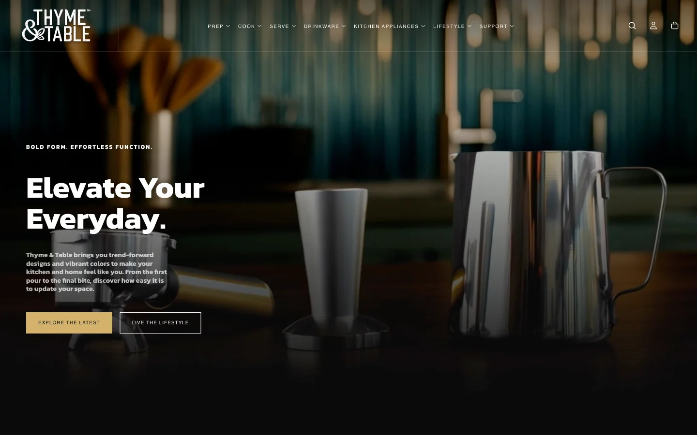

Thyme & Table
Overview
Thyme & Table now has a storefront that handles a wide catalog with ease — bold navigation, lifestyle content, and social proof that help shoppers find the right product and buy with confidence.
Thyme & Table is a trend-forward kitchen and home brand offering cookware, bakeware, dinnerware, drinkware, kitchen appliances, and lifestyle content with bold colors and effortless function.
The Problem
- The catalog spans Prep, Cook, Serve, Drinkware, Appliances, and Lifestyle — each with multiple sub-categories.
- Customers shop by category and by lifestyle moment, requiring flexible navigation.
- Higher-ticket items like espresso machines needed testimonials and recipe content for purchase confidence.
- The site had to feel as polished as the products themselves.
The Solution
- Multi-level mega-menu navigation organized around Prep, Cook, Serve, Drinkware, Appliances, and Lifestyle.
- Dedicated collection pages for Cookware series, Kitchen Appliances, Dinnerware, and more.
- Original Recipes content section connecting products to real kitchen moments.
- Customer testimonials for high-ticket appliance purchases.
- Support hub with FAQ, How To's, Product Registration, and Replacement Parts.
The Outcome
The storefront at shopthymeandtable.com now delivers measurable improvements for the business and its customers.
- Navigation makes a wide catalog feel approachable and inspiring.
- Lifestyle and recipe content support discovery beyond the product grid.
- Testimonials build confidence for higher-ticket appliance purchases.
- The site is a scalable foundation for seasonal campaigns and new launches.
Results
SWFT strategic scoring based on the pre-launch audit and the final launch experience. These numbers represent readiness improvement on a 100-point scale, not claimed analytics from a private client dashboard.
Catalog navigation: 40 to 89 / 100
Lifestyle content integration: 33 to 82 / 100
High-ticket purchase confidence: 36 to 80 / 100
Support and retention pathways: 42 to 85 / 100
Closing
When your catalog is wide, clarity is your competitive advantage. SWFT builds e-commerce architectures that turn complexity into confidence — so every product finds its buyer.
Ready for results like this?
See the live project or start building your own with SWFT Studios.